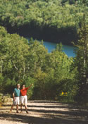

Download as PDF
Download as PDFLocal attractions
Near the ocean front community on the Fundy Shore there are numerous options close by - such as golf, tennis, exploring the sea side, and unlimited hiking trails. Jasper, agate, and amethyst reward the patient beachcomber. Or you can just let nature unfold around you-with or without your bird book and binoculars.
Rockcliffe By-the-Sea is a retreat but not remote. These private seaside lots are just eight kilometers away from the Town of Parrsboro where you'll find all the daily necessities. It's an energetic, picturesque town full of friendly, resourceful people. Truro, a major commercial centre, is just an hour away, and the provincial capital, Halifax, with its international airport, only a two-hour drive.
Living on ocean front lots in Nova Scotia comes with the benefits of a quite relaxed atmosphere. Near the seaside community of Rockcliffe By-The-Sea, there are many places to visit and discover.
Places to Stay
- The Gillespie House
- The Parrsboro Mansion Inn
- Tidal River Ridge
- Ebb Tide
- Liz Yorke
- The Maple Inn
- Driftwood Park Retreat
- Five Islands Retreat
- The Sunshine Inn